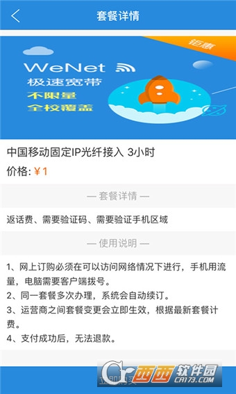
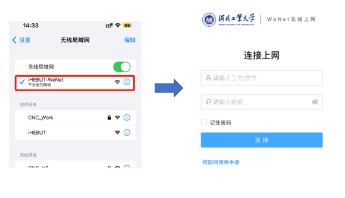

WeNet 这一路：从宿舍网口到全平台认证，它是怎么把校园网变简单的
一个校园网客户端的迭代逻辑——从最早可能只是一个拨号器，到现在覆盖手机、电脑、有线无线，甚至教你怎么找开通的网口。我们拆开看看它这几年在死磕什么。
现状：你现在打开的 WeNet，已经不是那个"只负责拨号"的东西了
我最近翻样本文档的时候，一个感受特别强烈：现在的 WeNet 已经把"校园网"这三个字包得密不透风。
你想想看，一个正常的大学生关于校园网会遇到什么问题——从找哪面墙的网口能用（宿舍进门两侧墙角那几个，床边的旧网口通常已停用），到插线后怎么判断亮不亮黄灯，再到填 PPPoE 账号密码拨号；从手机连上 WiFi 后要手动开 WeNet App 点"认证上线"，到息屏后后台被系统杀掉导致的掉线重连；从测速只有几 KB 的时候到底是校园网真慢还是 Steam 在限速，到 macOS 用户第一次打开客户端就被 Gatekeeper 拦住的"来自身份不明的开发者"警告……
这些场景里，没有一个是"单纯拨号"能解决的。你现在打开wenet官网，它的价值早就不是帮你建立一条 PPPoE 连接——它在教你怎么用校园网。我甚至觉得，WeNet 这几年最大的产品转变，就是从"认证工具"变成了"校园网说明书"。

来路：它从哪起步，文档没说的部分恰恰说明了什么
样本文档里没有写版本号。这个细节本身就挺有意思——说明对于大多数用户来说，WeNet 的存在感是"开机自启、后台运行、认证了就消失"，没有人会刻意留意它的版本迭代。
但我可以推断一下它的起步：最早的 WeNet 一定只是一个单平台的 PPPoE 拨号器。
你想，十年前的校园网是什么样的：宿舍里一堆空着的网口，你得挨个试哪个亮灯；Windows 自带 PPPoE 配置很麻烦，要去控制面板找网络连接，新建一个拨号，输账号密码，每一步都容易错。那时候运营商推出 WeNet，第一版大概率就是把这个拨号流程图形化——填账号密码，点连接，完事。
然后发生了什么？WiFi 来了。Portal 认证取代了 PPPoE 成为主流，你走进宿舍连 WiFi，浏览器会弹出一个认证页面，输学号密码。但 Portal 有个痛点：后台容易掉，尤其是 Android，系统会杀后台省电量。这时候 WeNet 必须进化——从"只负责 PPPoE 拨号"变成"同时处理 Portal 认证和 PPPoE"，还要在后台保持心跳不让系统杀掉。
再往后，移动端变成了主力。2020 年之后，大学生用手机上网的时间远超过电脑。WeNet 必须有移动端 App，而且移动端不能只是个简化版的 PC 客户端——手机的 WiFi 认证流程和电脑不一样，后台保活机制不一样，锁屏解锁后的重连逻辑也不一样。样本里 Android 要手动给 WeNet 加锁防清理，iOS 不用管但息屏后可能断网，这些都是移动时代才要解决的问题。
然后是多平台补齐。先有 Windows，再出 macOS 版，你可以从官方下载拿到对应系统的客户端——macOS 的 Gatekeeper 会拦截未签名的 App，用户要去系统设置里点"仍要打开"，这个坑 WeNet 没少踩。后来又出了小程序端，甚至微信里能查流量余额、在线报修。

规律：从迭代节奏看，他们一直在死磕什么
如果把这些演进串成一条线，我看到的规律特别清楚：他们一直在把"校园网"这件事拆解得更细，然后再拼起来让用户不用动脑。
这个产品的核心矛盾从来不是"怎么认证"——Portal 和 PPPoE 都是成熟协议，技术上没什么难的。难的是用户不知道校园网是个什么东西。
你去wenet文档翻那几篇故障排查文档：测速只有几 KB 的时候，90% 的用户第一反应是"校园网真垃圾"，但其实可能是 Steam 在限速、可能是夜间高峰限流、可能是免费流量用完了被自动限速。WeNet 的做法不是改协议，而是在客户端里加测速工具、加流量提醒、加故障自检——帮用户区分"真的慢"和"只是你碰到了一个限速场景"。
再看"找开通的网口"这件事。你可能觉得这关 WeNet 什么事？但如果用户插错了网口、反复尝试、以为自己账号密码错了，最后还是要打电话报修。WeNet 把这个判断逻辑写进了文档，甚至可能在客户端里加了网口状态检测——插网线后检测到物理连接，自动问你要不要建 PPPoE。
这个团队一直在死磕的，就是"用户不该懂校园网"。你不需要知道什么是 PPPoE、什么是 Portal、什么是 DNS 劫持——你只需要开 WeNet、输账号、点连接。其他的，它在后台帮你搞定；搞不定的，它教你怎么快速定位问题。
什么是他们一直不管的？高级功能。比如自定义认证服务器地址？没有。比如批量管理多个账号？没有。比如接入企业级认证（802.1X）？文档里完全没提。他们把精力全部放在"最常见的 80% 场景"上，剩下 20% 的边缘需求，爱折腾的用户自己想办法。这个取舍是对的——校园网用户的核心需求从来不是"高级网络管理"，而是"能上网"。
预判：照这个路线，下一步大概率的走向
我得先说清楚，这不是官方口径，就是从他们这几年的迭代节奏推的。
第一个方向我觉得已经在路上了：更智能的故障排查。现在的做法是给一张排查清单，用户对着一条条试——网口灯亮不亮？电脑显示已连接吗？拨号报什么错误码？下一步应该是客户端自动检测：插上网线自动识别网口状态、检测到 Portal 认证超时自动切换到备用认证方式、DNS 解析慢的时候自动提示要不要改成阿里 DNS 或 114.114.114。
第二个方向：更轻量的认证。现在还是要输账号密码、点连接、等几秒。下一代会不会变成"无感认证"——第一次输完，后面进校园网区域自动连上，不需要手动开 App、不需要点认证按钮？这取决于学校的认证系统能不能配合，但从 WeNet 这边看，他们的技术积累已经够了。
第三个方向可能有点远：从"连接工具"变成"校园网络服务入口"。现在 WeNet 里已经有查流量、在线报修的功能了，未来会不会集成更多——校园网流量充值、路由器配置入口、甚至校园内其他网络服务的快捷通道？这个方向的空间很大，但也可能会遇到边界问题——如果做太多，会不会变成一个"什么都想做"的杂糅体？
最后
我翻完这些文档最大的感受是：WeNet 是个"笨但真诚"的产品。它没有花哨的界面，没有高级的功能，它就是把"连校园网"这件事的每一个坑都踩过一遍，然后把解决方法塞进客户端和文档里。版本号不重要，界面好不好看不重要，重要的是——当一个新生第一次打开 WeNet 的时候，他不需要去百度"校园网怎么连"，开应用、输学号、点连接，完事。
这份文档和源码我同步到了GitHub、Gitee、GitCode 三个仓库，国内访问不方便的朋友直接走 Gitee 或 GitCode 就行。